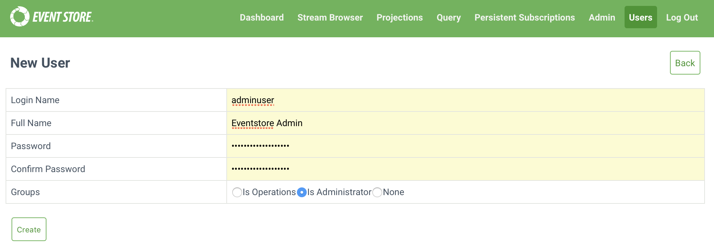

Security
Event Store supports basic authentication for HTTP API calls, and access control lists (ACL).
Authentication
Creating users
Event Store supports basic HTTP authentication to internal users. You create these users with the RESTful API or the admin console. You need to use the credentials of the default user in the request, which has the user name of admin, and the password of changeit.

curl -i -d "@new-user.json" "http://127.0.0.1:2113/users" -H "Content-Type:application/json"
Once you have added users, you can use their details with requests.
Note
You can also use the 'trusted intermediary' header for externalized authentication that allows you to integrate almost any authentication system with Event Store. Read more about the trusted intermediary header.
If you were to use the wrong user or no user when a request requires one, you receive a 401 Unauthorized response.
As you pass the username and password in the request we recommend you run Event Store over HTTP, and enable SSL to encrypt the user information. Read this guide for instructions. If you are running the clustered version you can also setup SSL for the replication protocol.
Access control lists
Alongside authentication, Event Store supports per stream configuration of Access Control Lists (ACL). To configure the ACL of a stream go to its head and look for the metadata relationship link to fetch the metadata for the stream.
To set access control lists over HTTP you can post to the metadata stream as with setting any other metadata. You can also set Access Control Lists for a stream in the admin UI.
For more information on the structure of Access Control Lists read Access Control Lists.